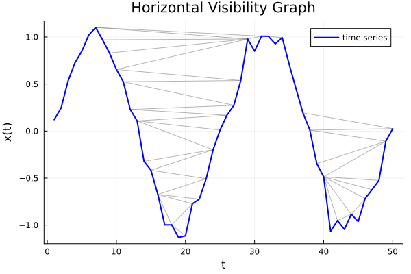
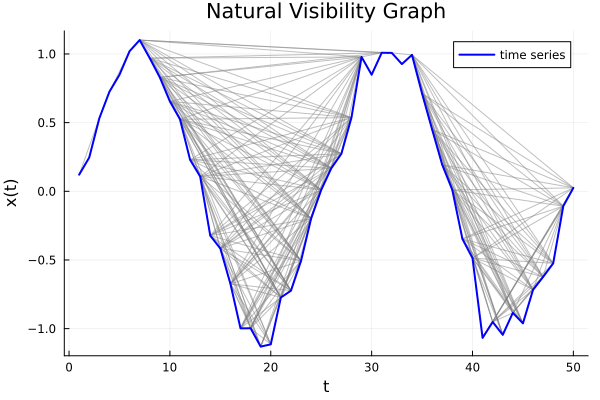
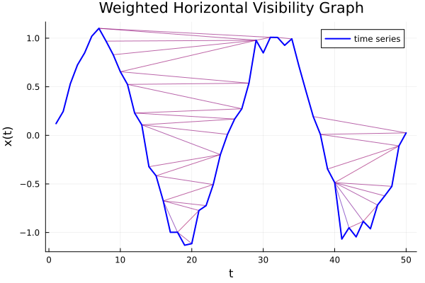
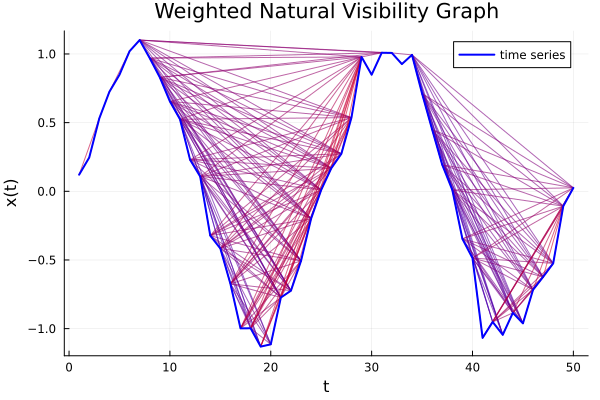

Getting Started
This guide introduces the basic workflow of VisGraphs.jl for constructing and analyzing visibility graphs from time series data.
We cover:
- Horizontal Visibility Graph (HVG)
- Natural Visibility Graph (NVG)
- Weighted variants
- Basic graph analysis tools
Installation
If you haven’t installed VisGraphs.jl yet:
using Pkg
Pkg.add(url="https://github.com/Mangojoghurt/VisGraphs.jl")Then load the package:
using VisGraphsExample Time Series
We start by generating a simple noisy oscillatory signal using the built-in utility function from VisGraphs.jl.
To make the example reproducible, we use a seeded rng:
using Random
rng = MersenneTwister(42)
x = generate_noisy_sine(50, 0.1; rng=rng)50-element Vector{Float64}:
0.12102820220490369
0.24575472347064892
0.53106873275288
0.7246776623347925
0.848438539592325
1.020065830123021
1.1011806839671492
0.9695415127728219
0.829560582646884
0.6545043213684334
⋮
-0.9512125553623613
-1.0446894791826744
-0.8847315595576561
-0.9614609922081746
-0.7173551061992065
-0.6232267586966717
-0.524581581492141
-0.10802403988166301
0.025357341664453203This produces a sine wave with additive Gaussian noise, which is useful for demonstrating visibility graph constructions on realistic, non-smooth signals.
Horizontal Visibility Graph (HVG)
The Horizontal Visibility Graph (HVG) connects points that can “see” each other using a horizontal line-of-sight criterion.
Construct the HVG
edges_hvg = hvg(x)85-element Vector{Tuple{Int64, Int64}}:
(1, 2)
(2, 3)
(3, 4)
(4, 5)
(5, 6)
(6, 7)
(7, 8)
(7, 29)
(7, 31)
(8, 9)
⋮
(42, 44)
(43, 44)
(44, 45)
(44, 46)
(45, 46)
(46, 47)
(47, 48)
(48, 49)
(49, 50)Plot the HVG
plot_hvg(x)
Natural Visibility Graph (NVG)
The Natural Visibility Graph (NVG) uses a geometric criterion based on straight-line visibility between points.
Construct the NVG
edges_nvg = nvg(x)270-element Vector{Tuple{Int64, Int64}}:
(1, 2)
(1, 3)
(2, 3)
(3, 4)
(4, 5)
(4, 6)
(5, 6)
(6, 7)
(7, 8)
(7, 22)
⋮
(44, 49)
(45, 46)
(46, 47)
(46, 48)
(46, 49)
(47, 48)
(47, 49)
(48, 49)
(49, 50)Plot the NVG
plot_nvg(x)
Weighted Visibility Graphs
Weighted variants attach one number to each edge: the angle, in radians, of the line connecting the two nodes, computed as atan(x[j] - x[i], j - i). This combines the vertical difference in value and the horizontal distance in time/index into a single quantity bounded within (-π/2, π/2) — a steep, fast change between two points produces an angle with large magnitude, while a gradual, slow change produces an angle close to zero.
edges_whvg = whvg(x)85-element Vector{Tuple{Int64, Int64, Float64}}:
(1, 2, 0.12408571412046887)
(2, 3, 0.2779295529994304)
(3, 4, 0.19124281533524268)
(4, 5, 0.12313474974027577)
(5, 6, 0.16997131349359162)
(6, 7, 0.08093765125016154)
(7, 8, -0.13088659452683243)
(7, 29, -0.005588479915587576)
(7, 31, -0.003848982130724701)
(8, 9, -0.13907723814351325)
⋮
(42, 44, 0.033228263196882546)
(43, 44, 0.15861423191026136)
(44, 45, -0.07657938323287723)
(44, 46, 0.08349366732822433)
(45, 46, 0.23942361476449778)
(46, 47, 0.09385181910877614)
(47, 48, 0.09832706462579384)
(48, 49, 0.3946981338011144)
(49, 50, 0.1325987409421735)edges_wnvg = wnvg(x)270-element Vector{Tuple{Int64, Int64, Float64}}:
(1, 2, 0.12408571412046887)
(1, 3, 0.20221804477824948)
(2, 3, 0.2779295529994304)
(3, 4, 0.19124281533524268)
(4, 5, 0.12313474974027577)
(4, 6, 0.14663401363074582)
(5, 6, 0.16997131349359162)
(6, 7, 0.08093765125016154)
(7, 8, -0.13088659452683243)
(7, 22, -0.1210393240836577)
⋮
(44, 49, 0.15410977466426515)
(45, 46, 0.23942361476449778)
(46, 47, 0.09385181910877614)
(46, 48, 0.09608992447069752)
(46, 49, 0.20038448951345803)
(47, 48, 0.09832706462579384)
(47, 49, 0.25211998947096065)
(48, 49, 0.3946981338011144)
(49, 50, 0.1325987409421735)plot_whvg(x)
plot_wnvg(x)
Graph Analysis
Once constructed, visibility graphs can be analyzed using standard graph-theoretic tools.
Adjacency Matrix
A = adjacency_matrix(edges_hvg, length(x))50×50 SparseArrays.SparseMatrixCSC{Int64, Int64} with 170 stored entries:
⎡⠪⡢⡀⠀⠀⠀⠀⠀⠀⠀⠀⠀⠀⠀⠀⠀⠀⠀⠀⠀⠀⠀⠀⠀⠀⎤
⎢⠀⠈⠪⡢⡀⠀⠀⠀⠀⠀⠀⠀⠀⠀⡄⠄⠀⠀⠀⠀⠀⠀⠀⠀⠀⎥
⎢⠀⠀⠀⠈⠪⡢⡀⠀⠀⠀⠀⠀⢀⡴⠃⠀⠀⠀⠀⠀⠀⠀⠀⠀⠀⎥
⎢⠀⠀⠀⠀⠀⠈⠪⡢⣀⠀⣀⡼⠉⠀⠀⠀⠀⠀⠀⠀⠀⠀⠀⠀⠀⎥
⎢⠀⠀⠀⠀⠀⠀⠀⠘⢪⡲⡂⠀⠀⠀⠀⠀⠀⠀⠀⠀⠀⠀⠀⠀⠀⎥
⎢⠀⠀⠀⠀⠀⠀⣀⡼⠈⠈⠪⡢⡀⠀⠀⠀⠀⠀⠀⠀⠀⠀⠀⠀⠀⎥
⎢⠀⠀⠀⠀⢀⡴⠃⠀⠀⠀⠀⠈⠪⡢⡀⠀⠀⠀⠀⠀⠀⠀⠀⠀⠀⎥
⎢⠀⠀⠀⠍⠉⠀⠀⠀⠀⠀⠀⠀⠀⠈⠮⡣⣀⠀⠀⠀⠀⠀⠀⠀⠀⎥
⎢⠀⠀⠀⠀⠀⠀⠀⠀⠀⠀⠀⠀⠀⠀⠀⠘⠪⡢⡀⠀⠀⠀⠀⠀⠀⎥
⎢⠀⠀⠀⠀⠀⠀⠀⠀⠀⠀⠀⠀⠀⠀⠀⠀⠀⠈⠪⡢⣀⢀⢀⣀⡞⎥
⎢⠀⠀⠀⠀⠀⠀⠀⠀⠀⠀⠀⠀⠀⠀⠀⠀⠀⠀⠀⢘⢪⡲⣀⠀⠀⎥
⎢⠀⠀⠀⠀⠀⠀⠀⠀⠀⠀⠀⠀⠀⠀⠀⠀⠀⠀⠀⢰⠀⠘⠪⡢⡀⎥
⎣⠀⠀⠀⠀⠀⠀⠀⠀⠀⠀⠀⠀⠀⠀⠀⠀⠀⠀⠚⠉⠀⠀⠀⠈⠊⎦Degree Distribution
degrees, dist = degree_distribution(edges_hvg, length(x))([1, 2, 2, 2, 2, 2, 4, 3, 3, 4 … 2, 4, 2, 5, 2, 4, 3, 3, 5, 3], Dict(5 => 0.1, 4 => 0.27999999999999997, 6 => 0.02, 7 => 0.02, 2 => 0.27999999999999997, 8 => 0.02, 3 => 0.25999999999999995, 1 => 0.02))Laplacian Matrix
L = laplacian_matrix(edges_hvg, length(x))50×50 SparseArrays.SparseMatrixCSC{Int64, Int64} with 220 stored entries:
⎡⠻⣦⡀⠀⠀⠀⠀⠀⠀⠀⠀⠀⠀⠀⠀⠀⠀⠀⠀⠀⠀⠀⠀⠀⠀⎤
⎢⠀⠈⠻⣦⡀⠀⠀⠀⠀⠀⠀⠀⠀⠀⡄⠄⠀⠀⠀⠀⠀⠀⠀⠀⠀⎥
⎢⠀⠀⠀⠈⠻⣦⡀⠀⠀⠀⠀⠀⢀⡴⠃⠀⠀⠀⠀⠀⠀⠀⠀⠀⠀⎥
⎢⠀⠀⠀⠀⠀⠈⠻⣦⣀⠀⣀⡼⠉⠀⠀⠀⠀⠀⠀⠀⠀⠀⠀⠀⠀⎥
⎢⠀⠀⠀⠀⠀⠀⠀⠘⢻⣶⡂⠀⠀⠀⠀⠀⠀⠀⠀⠀⠀⠀⠀⠀⠀⎥
⎢⠀⠀⠀⠀⠀⠀⣀⡼⠈⠈⠻⣦⡀⠀⠀⠀⠀⠀⠀⠀⠀⠀⠀⠀⠀⎥
⎢⠀⠀⠀⠀⢀⡴⠃⠀⠀⠀⠀⠈⠻⣦⡀⠀⠀⠀⠀⠀⠀⠀⠀⠀⠀⎥
⎢⠀⠀⠀⠍⠉⠀⠀⠀⠀⠀⠀⠀⠀⠈⠿⣧⣀⠀⠀⠀⠀⠀⠀⠀⠀⎥
⎢⠀⠀⠀⠀⠀⠀⠀⠀⠀⠀⠀⠀⠀⠀⠀⠘⠻⣦⡀⠀⠀⠀⠀⠀⠀⎥
⎢⠀⠀⠀⠀⠀⠀⠀⠀⠀⠀⠀⠀⠀⠀⠀⠀⠀⠈⠻⣦⣀⢀⢀⣀⡞⎥
⎢⠀⠀⠀⠀⠀⠀⠀⠀⠀⠀⠀⠀⠀⠀⠀⠀⠀⠀⠀⢘⢻⣶⣀⠀⠀⎥
⎢⠀⠀⠀⠀⠀⠀⠀⠀⠀⠀⠀⠀⠀⠀⠀⠀⠀⠀⠀⢰⠀⠘⠻⣦⡀⎥
⎣⠀⠀⠀⠀⠀⠀⠀⠀⠀⠀⠀⠀⠀⠀⠀⠀⠀⠀⠚⠉⠀⠀⠀⠈⠛⎦Clustering Coefficient
local_c, global_c = clustering_coefficient(edges_hvg, length(x))([0.0, 0.0, 0.0, 0.0, 0.0, 0.0, 0.3333333333333333, 0.6666666666666666, 0.6666666666666666, 0.5 … 1.0, 0.5, 1.0, 0.4, 1.0, 0.5, 0.6666666666666666, 0.6666666666666666, 0.4, 0.6666666666666666], 0.484047619047619)Average Path Length
average_path_length(edges_hvg, length(x))8.078367346938775adjacency_matrix and laplacian_matrix return sparse matrices (SparseMatrixCSC), since visibility graphs typically have far fewer edges than a fully dense graph would. All standard matrix operations (indexing, size, sum, ==, etc.) work exactly as they would on a dense matrix.
Next Steps
You can now:
- Try different time series (chaotic, financial, periodic)
- Compare HVG vs NVG structures
- Explore spectral properties via the Laplacian
- Use weighted graphs for richer feature extraction